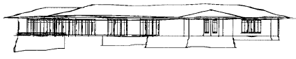

Computer based design software and hardware has typically been tailored towards producing sharp, precise drawings and images. Can the same technology also generate more imprecise graphical output such as a rough conceptual sketch as created by a human designer? Two characteristics of a human sketch which do not occur in computer printed output from CAD packages are
There are three ways these effects might be achieved. The first is to create or modify an output device so that it can replicate the attributes of a human drawer. There are possibilities here for robot arms which can easily be designed to hold a variety of drawing implements and programmed to draw in specified styles. A somewhat unusual attempt at computer sketching is to attach a pen to a plotter loosely with elastic and tape, the result being that the pen wobbles around during a plot giving the desired imprecise appearance. A second technique is to modify the drawing instructions on their way from the CAD software to the output device. For example the vectors could be intercepted and changed to give the appearance of a human sketch before being forwarded to the plotter. The approach used here is to modify the geometry of a 3D model itself. Both of the effects mentioned above are quite easy to simulate by computer using random and fractal methods. Non-intersecting lines are achieved by extending both ends of line segments by a random distance. The distance should be related to the line length, the application I developed allowed a range of overshoots from between zero and a user chosen maximum. The wiggly line effect was generated by a well known technique from fractal geometry called "random midpoint displacement". It takes a straight line segment and generates a fractal curve by repeatedly splitting lines and perturbing their midpoint, the degree of wiggle is easily controlled by the user. Convincing sketches can be created with these techniques. It should be noted that the result is a "3D sketch" from which hardcopy can be created from any view and projection. The following examples are LaserWriter prints showing a number of views of one of these 3D sketches with a selection of overshoot and wiggle parameters. House, front view

Another noticeable effect of hand drawings is that the intensity is not constant along a line and also varies within a drawing. Typically a line is darker at the beginning and lighter near the end, lines also tend to be darker for foreground items or parts of the drawing of particular interest.. While it is not possible to maintain fine lines and introduce intensity on most printers, it is possible to simulate this effect if a plotter is being used to create the drawing. Plotters that fully support HPGL can have the pen speed, acceleration, and force set for any line segment. These pen properties will not have the desired effect with most plotters pens but will if pencils are used. |